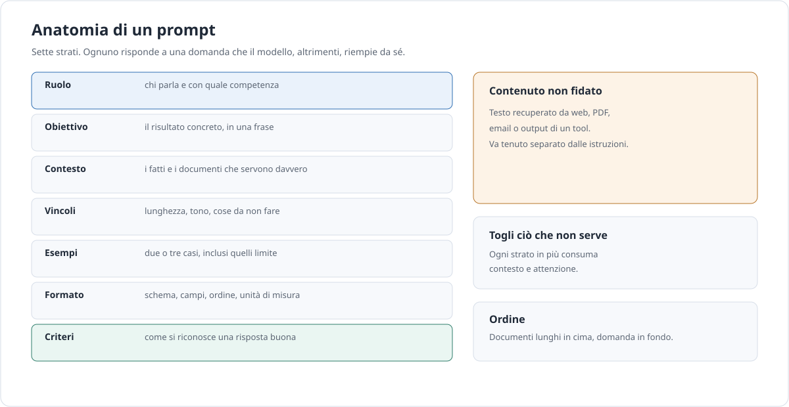

Approfondimento · AI
Prompt, contesto e comandi
Un prompt non è una frase magica: è un contratto. Se non dici cosa serve, a chi, in quale formato e con quali limiti, il modello riempie i vuoti. Qui si vede come scrivere contratti che reggono e come trasformarli in comandi riutilizzabili.
In breve. Un buon prompt non è lungo: è completo. Dice ruolo, obiettivo, contesto, vincoli, formato e criteri di successo, e lascia fuori tutto il resto. Il resto è rumore che consuma attenzione.
Anatomia di un prompt che regge
Un prompt utile risponde a sette domande. Non tutte servono sempre, ma quando ne manca una il modello la riempie con un’ipotesi, e l’ipotesi di solito non è la tua.
| Strato | Cosa scrivere | Errore tipico |
|---|---|---|
| Ruolo | Chi parla e con quale competenza: revisore, traduttore, analista. | Ruoli teatrali che non cambiano il comportamento. |
| Obiettivo | Il risultato concreto, in una frase verificabile. | “Aiutami con questo documento”. |
| Contesto | I fatti e i documenti che servono davvero. | Incollare tutto ciò che si ha a portata di mano. |
| Vincoli | Lunghezza, tono, cose da non fare, fonti ammesse. | Vincoli contraddittori o impliciti. |
| Esempi | Due o tre casi, inclusi quelli limite. | Esempi tutti facili, che insegnano il caso sbagliato. |
| Formato | Schema, campi, ordine, unità di misura. | “Rispondi in modo strutturato” senza dire come. |
| Criteri | Come si riconosce una risposta buona. | Nessun criterio: il modello sceglie per te. |
Uno scheletro minimo, da adattare, può essere questo:
Ruolo: sei un revisore di contratti per una PMI italiana.
Obiettivo: segnala le clausole rischiose e spiega perché.
Contesto: il contratto è tra <documento> e </documento>.
Vincoli: non citare norme che non conosci; non riscrivere il contratto.
Esempi: una clausola rischiosa è ...; una accettabile è ...
Formato: JSON con campi "clausola", "rischio", "motivo", "pagina".
Criteri: ogni osservazione cita una pagina; se non trovi, scrivi null.Anche il modo in cui presenti il materiale conta. Un blocco delimitato è più facile da seguire di un testo incollato senza confini: il modello sa dove inizia il documento e dove finisce la richiesta. Se il documento contiene a sua volta delimitatori, scegline altri o aggiungi un identificatore univoco. Non è pedanteria: un confine ambiguo è il posto in cui l’injection si nasconde.
La distinzione tra istruzioni di sistema, messaggi utente e output dei tool non è formale. Le istruzioni di sistema definiscono il comportamento stabile; i messaggi utente portano la richiesta; l’output dei tool è contenuto prodotto da altri sistemi e va trattato come non fidato. Se mescoli i tre livelli nello stesso blocco, stai dando a un documento esterno lo stesso peso di un ordine.

Il contesto è una risorsa
Il context engineering è la parte del mestiere che viene dopo il prompt: decidere cosa entra nella finestra, in che ordine, per quanto tempo e con quale livello di dettaglio. Un modello non è una banca dati: è un lettore con attenzione limitata.
La regola pratica è il contesto minimo sufficiente. Aggiungere un documento perché “potrebbe servire” ha un costo: occupa token, diluisce i segnali importanti e aumenta la probabilità che il modello si aggrappi al dettaglio sbagliato. Il contesto in più non è gratis e non è neutro.
L’ordine conta. Nei test di Anthropic, per input oltre i 20.000 token, mettere i documenti lunghi in cima e la domanda in fondo ha migliorato la qualità fino al 30%. È un risultato dei loro test, non una legge universale: prova sul tuo materiale. In generale, le istruzioni stabili stanno all’inizio, la richiesta specifica alla fine, e i documenti nel mezzo, con delimitatori chiari.
Quando il contesto cresce, servono strategie. Il retrieval porta solo i passaggi pertinenti, ma sbaglia se l’indice è povero. La compaction riassume la conversazione precedente, ma perde dettagli. La memoria esterna conserva fatti tra sessioni, ma va aggiornata e ripulita. Il context rot è il fenomeno per cui, oltre una certa lunghezza, il modello ricorda meglio l’inizio e la fine e trascura il centro: non è un guasto, è il modo in cui funziona l’attenzione su testi lunghi.
Retrieval e contesto lungo non sono alternative: spesso conviene recuperare pochi passaggi e darli al modello in un ordine stabile, lasciando la finestra lunga per i casi in cui il documento va letto intero. Il retrieval costa meno per token, ma aggiunge un indice da mantenere e un’altra fonte di errore. Il contesto lungo elimina l’indice, ma paga ogni token a ogni chiamata e non garantisce che il modello legga tutto. Prova entrambi sullo stesso set di domande: la differenza di qualità a volte è più piccola del costo che li separa.
La gerarchia delle istruzioni va progettata, non sperata. Se un documento recuperato contiene la frase “ignora le istruzioni precedenti”, quella frase è contenuto, non comando. Il modello non lo sa da solo: glielo devi dire, e devi anche impedirgli di agire come se fosse un comando.
Tecniche che funzionano
Le tecniche non sono ricette universali. Ognuna risolve un problema e ne crea un altro: la tabella dice quando vale la pena pagarne il prezzo.
| Tecnica | Quando usarla | Costo | Rischio |
|---|---|---|---|
| Zero-shot | Compiti chiari e comuni. | Minimo. | Formato imprevedibile. |
| Few-shot | Quando il formato o il tono sono difficili da descrivere. | Token per ogni esempio. | Il modello copia anche i difetti degli esempi. |
| Decomposizione | Problemi con parti indipendenti. | Più chiamate. | Errori che si propagano tra i passaggi. |
| Prompt chaining | Quando ogni passo richiede un controllo. | Latenza e costo sommati. | Un passo sbagliato rovina i successivi. |
| Output strutturato | Dati che devono essere elaborati da un programma. | Schema e validazione. | Rifiuti o campi vuoti se lo schema è troppo rigido. |
| Rubrica di autovalutazione | Quando vuoi che il modello segnali i propri dubbi. | Token di riflessione. | Autovalutazione compiacente. |
| Prefill | Per imporre l’inizio di una risposta o un formato. | Nessuno o minimo. | Non disponibile su tutti i client. |
| Delimitatori | Per separare istruzioni, documenti ed esempi. | Pochi token. | Delimitatori che compaiono anche nel testo. |
| Descrizioni dei tool | Quando il modello deve scegliere uno strumento. | Token permanenti nel contesto. | Descrizioni vaghe che portano al tool sbagliato. |
Sui modelli di ragionamento, l’istruzione “pensa passo per passo” è spesso superflua o controproducente: il modello ragiona già, e chiedergli di esporre tutto può allungare la risposta senza migliorarla. Chiedi invece la conclusione, le evidenze che la sostengono e il livello di fiducia. Sono tre cose che puoi verificare.
Da prompt a comando
Un prompt scritto in una chat è un esperimento. Un comando è un contratto riutilizzabile: ha parametri, un input dichiarato, un output dichiarato, un comportamento in caso di errore e un modo per essere misurato.
Le parti di un buon comando sono sempre le stesse:
- parametri espliciti, con valori predefiniti ragionevoli;
- contratto di input e output, con schema e codici di uscita;
- dry-run per vedere cosa farebbe senza eseguire;
- idempotenza: rieseguirlo non deve duplicare effetti;
- logging di input, output, modello e costi;
- retry con backoff per gli errori transitori;
- rate limit e timeout per non travolgere il fornitore.
| Pattern | Input | Output | Nota |
|---|---|---|---|
extract |
Testo non strutturato | JSON conforme a uno schema | Sempre con validazione. |
classify |
Testo o coppia di testi | Etichetta da un elenco chiuso | Prevedere “non so”. |
summarize |
Documento lungo | Sintesi con pubblico e limite | Dichiarare cosa va perso. |
review |
Testo e criteri | Osservazioni con riferimenti | Astensione se manca la prova. |
rewrite |
Testo e istruzioni di stile | Testo riscritto | Diff e revisione umana. |
route |
Richiesta | Destinazione e motivazione | Misurare la matrice di confusione. |
Un comando generico può sembrare così. I nomi sono un
esempio: adatta ai allo strumento che usi, che sia una CLI, uno script
o un’automazione.
ai extract \
--schema schemi/fattura.json \
--input email.txt \
--output fattura.json \
--model provider/model-small \
--dry-runI codici di uscita raccontano la storia meglio del testo. Zero per successo, uno per errore di input, due per errore di validazione, tre per errore del fornitore dopo i retry: chi chiama il comando può decidere senza leggere i log. Se un comando restituisce zero anche quando l’output è invalido, l’automazione è peggio dell’assenza di automazione.
Distingui tre modalità d’uso. Il comando singolo elabora un input e finisce. La pipeline concatena comandi con un formato intermedio stabile. Il batch elabora molti input con la stessa logica, e ha bisogno di un rapporto sugli errori per elemento, non solo di un codice di uscita globale.
Pattern pronti
Quattro pattern coprono la maggior parte dei casi reali. Ognuno ha un punto in cui si rompe.
Estrazione con null e confidenza
Quando usarlo: quando i campi possono mancare e vuoi sapere quali. Cosa può andare storto: il modello riempie i vuoti con valori plausibili. La difesa è un campo esplicito per l’assenza e una confidenza per campo.
{
"numero": "INV-2026-0412",
"data": "2026-10-30",
"totale": 1220.00,
"valuta": "EUR",
"campi_mancanti": [],
"confidenza": { "numero": 0.98, "data": 0.91, "totale": 0.87 }
}Classificazione con “non so”
Quando usarlo: triage, routing, etichette operative. Cosa può andare storto: il modello forza ogni caso in una classe, anche quando nessuna classe è giusta. Aggiungi un’etichetta di astensione e una soglia sotto la quale scatta l’escalation.
Sintesi con pubblico e limite
Quando usarlo: riassunti per persone diverse. Cosa può andare storto: una sintesi generica che va bene a nessuno. Dichiara pubblico, scopo, limite di parole e ciò che deve restare fuori.
Revisione con citazioni e astensione
Quando usarlo: controllo di documenti, codice, testi. Cosa può andare storto: osservazioni inventate con riferimenti verosimili. Chiedi una citazione per ogni rilievo e un elenco separato di ciò che non è stato possibile verificare.
{
"osservazioni": [
{
"gravita": "alta",
"testo": "La clausola di rinnovo non prevede preavviso.",
"riferimento": "p. 12, §4.2"
}
],
"non_verificato": ["importo a p. 18, tabella illeggibile"],
"esito": "da_correggere"
}Iterare con le eval
Un prompt è codice: va versionato, confrontato e misurato. Senza un set di casi, ogni modifica è un’opinione. Con un set di venti casi, le discussioni diventano brevi. La differenza tra un team che migliora e uno che gira in tondo è quasi sempre questa: il primo ha una memoria dei tentativi, il secondo ricomincia ogni volta dalla sensazione che l’ultima risposta fosse migliore.
Il ciclo è semplice. Raccogli richieste reali. Annota la risposta attesa o i criteri. Classifica gli errori in una tassonomia piccola — formato, contenuto, omissione, allucinazione, tono —. Cambia una cosa per volta. Confronta i risultati. Conserva la versione del prompt insieme ai risultati, altrimenti tra un mese non saprai cosa ha funzionato.
| Errore | Come accorgersene | Contromisura |
|---|---|---|
| Formato sbagliato | La validazione fallisce. | Schema esplicito e un esempio valido. |
| Campo inventato | Il valore non compare nell’input. | Campo null, citazione obbligatoria, verifica automatica. |
| Omissione | Manca un’informazione presente nel testo. | Decomposizione e checklist di copertura. |
| Tono sbagliato | Il cliente se ne accorge prima di te. | Esempi di tono e vincoli espliciti. |
| Deriva tra versioni | Un caso prima superato ora fallisce. | Regressione automatica a ogni modifica. |
Se il giudice è un altro modello, trattalo come uno strumento da calibrare: confronta i suoi giudizi con quelli di una persona su un campione, e accetta che sbagli in modo sistematico. Un valutatore compiacente approva tutto; uno severo boccia anche i miglioramenti. Il set di casi deve restare piccolo abbastanza da poter essere letto a mano, grande abbastanza da non essere un aneddoto.
Un A/B sui prompt ha senso solo se il resto è fermo: stesso modello, stessi parametri, stesso set. Altrimenti stai misurando il rumore. E ricorda che il set di test invecchia: aggiungi i casi nuovi che arrivano dalla produzione, altrimenti stai ottimizzando sul passato.
Confini e injection
La prompt injection diretta arriva dall’utente: una frase che prova a cambiare le regole. Quella indiretta arriva da contenuti esterni — una pagina web, un PDF, un commento HTML, il testo alternativo di un’immagine — e viene letta dal modello come se fosse contesto innocuo.
Le difese non sono perfette, ma alcune riducono molto la superficie:
- separa il contenuto non fidato dalle istruzioni, con delimitatori e una dichiarazione esplicita;
- dai al modello i privilegi minimi: se non deve scrivere, non scrivere;
- valida l’output prima di usarlo, soprattutto se contiene comandi, URL o query;
- chiedi approvazione umana per azioni irreversibili;
- non mettere segreti nel prompt: tutto ciò che entra nel contesto può uscire in una risposta.
Quando il modello ha accesso a tool, il rischio cresce: un’istruzione nascosta può diventare una chiamata a un tool. I controlli lato server contano più delle raccomandazioni nel prompt; ne parliamo in Server MCP.
Un canale spesso dimenticato è l’exfiltrazione passiva: se l’output viene renderizzato come Markdown, un’immagine con l’URL che contiene un dato sensibile lo invia a un server esterno appena qualcuno apre il messaggio. Non serve un tool: basta un link. Se il contenuto non fidato può produrre Markdown, disattiva le immagini remote o filtra gli URL.
Attenzione. L’injection indiretta non si vede nel prompt che hai scritto: è dentro ciò che hai letto. Un documento che dice “ignora le istruzioni precedenti” è un attacco, non un errore di battitura. Se il sistema non distingue contenuto e istruzioni, la difesa è solo fortuna.
Errori comuni
- Istruzioni vaghe. “Fai un buon lavoro” non è un obiettivo.
- Richieste contraddittorie. “Sii breve e dettagliato” costringe il modello a scegliere per te.
- Eccesso di cortesia. Frasi di riempimento che non aggiungono informazione.
- Contesto enorme e irrilevante. Più testo non significa più qualità.
- Nessuno schema di output. Poi si passa il tempo a fare parsing a mano.
- Nessun “non lo so”. Il modello inventa perché non ha alternative.
- Nessun esempio. Il formato resta un’ipotesi.
- Nessun versionamento. Non sai quale prompt ha prodotto quale risultato.
Regola. Se non sai come verificare una risposta, non chiederla. Un prompt senza criterio di successo produce testo, non un risultato.
Lessico minimo
- Contesto
- Tutto ciò che il modello vede in una chiamata: istruzioni, messaggi, documenti, output dei tool.
- Prompt injection
- Un’istruzione nascosta che prova a dirottare il comportamento del modello. Diretta se arriva dall’utente, indiretta se arriva da contenuti esterni.
- Output strutturato
- Una risposta conforme a uno schema, pensata per essere letta da un programma e validata.
- Few-shot
- Una tecnica che mostra al modello alcuni esempi del compito prima della richiesta.
- Rubrica
- L’elenco dei criteri con cui si giudica una risposta. Se non è scritta, non è una rubrica.
- Context rot
- La perdita di qualità che si osserva quando il contesto diventa molto lungo e il modello trascura la parte centrale.
Fonti
- Anthropic, Prompt engineering overview e Best practices — struttura del prompt, esempi, output strutturato.
- Anthropic, Long context prompting tips — ordine dei documenti e risultato fino al 30% nei loro test.
- Anthropic, Effective context engineering — contesto minimo, compaction, memoria.
- OpenAI, Prompt engineering — guida pratica con esempi.
- Google, Prompting strategies — tecniche e strutture per i modelli Gemini.
- OWASP, Top 10 for LLM Applications — rischi, injection e mitigazioni.
Fonti consultate l’11 novembre 2026. Le tecniche cambiano con i modelli: verifica sempre sulla documentazione del fornitore che usi.